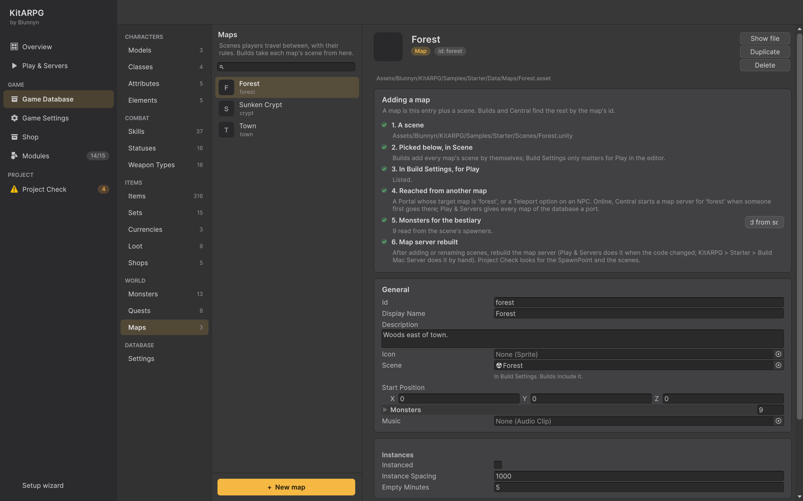

地图
地图是玩家可以所在的地方：Game Database 中的一个 MapData 条目加上一个 Unity 场景。本页介绍地图的每个字段、地图场景需要什么、玩家如何在地图之间往来、实例化地图，以及从场景到构建和服务器、添加新地图的完整步骤。
地图是什么
地图有两部分：
- 条目（
MapData，Game Database > World > Maps）。Central、存档、传送门和任务使用的是它的 id。它指定场景、起始位置、音乐、是否实例化以及 PvP 规则。 - 场景。 加载的内容：地面、NavMesh、出生点、怪物、NPC、传送门。
构建从 Game Database 获取每张地图的场景。你永远不需要手动维护场景列表。
示例中有四张地图：
| Id | 场景 | 展示内容 |
|---|---|---|
town |
Town | NPC、商店、任务、仓库、市场、公会服务。起始地图。 |
forest |
Forest | 怪物刷怪点、夜间刷怪点、Mushroom King、一个探索区域、世界触发器、收税员位置、5 级起的区域 PvP。 |
crypt |
Crypt | Sunken Crypt，一个带有首领 Void Herald 的实例化副本。 |
guild_hall |
GuildHall | 一张实例化地图：每个购买了会馆的公会获得自己的副本。 |
在编辑器中的位置

Game Database > World > Maps。+ New map 在数据库旁的 Maps 文件夹中创建一张地图，并把它加入数据库的 maps 列表。你也可以使用 Create > KitARPG > Map。
地图的卡片以 Adding a map 卡片开头，它用圆点显示每一步（已完成或待处理），并在有帮助时提供按钮：
- A scene：场景存在后显示其路径。
- Picked below, in Scene。
- In Build Settings, for Play：Add 按钮会把它加入。
- Reached from another map：提醒你设置传送门或传送，并显示地图的 id。
- Monsters for the bestiary：读取了多少个，并带有 Read from scene 按钮。
- Map server rebuilt。
新角色的起始地图是数据库设置：Game Database > Database > Settings，Start Map（startMap）。职业可以用它自己的起始地图覆盖。
字段
| 字段 | 作用 | 默认值 |
|---|---|---|
Id（id） |
Central、存档、传送门、传送和任务使用的值。由文件名填入一次，之后保持不变。修改它会让保存在该地图上的角色无处可去。 | 来自文件名 |
Display Name（displayName） |
游戏中显示的名称，例如在 "Travel to Forest" 和 "Discovered: Forest" 中。 | 空（资源名称） |
Description（description） |
在描述地图的地方显示。 | 空 |
Scene（scene） |
为该地图加载的场景。它需要一个 SpawnPoint 和一个 NavMesh。该字段是一个场景选择器，还会说明场景是否在 Build Settings 中。 |
空 |
Start Position（startPosition） |
以此为起始地图的新角色出现的位置。 | 0, 0, 0 |
Monsters（monsters） |
栖息在这里的怪物，供怪物图鉴使用。由 Read from scene 从场景的刷怪点填入，外加其首领召唤的小怪。 | 空 |
Music（music） |
玩家在这里时循环播放。留空：继续播放之前的音乐。 | None |
Instances
| 字段 | 作用 | 默认值 |
|---|---|---|
Instanced（instanced） |
每个队伍或每个单独的玩家获得自己的副本：即地下城副本。仅限在线；单人世界本来就只有一个副本。 | Off |
Instance Spacing（instanceSpacing） |
地图服务器上各副本之间相隔的米数，使它们永远看不到彼此。 | 1000 |
Empty Minutes（emptyMinutes） |
最后一名玩家离开后副本保留的分钟数，供返回的玩家使用。 | 5 |
Player against player
| 字段 | 作用 | 默认值 |
|---|---|---|
Pvp（pvp） |
Off、Zones（仅在 PvP 区域内，双方都要在内）或 Everywhere。决斗在任何地方都可以。 | Off |
Pvp Min Level（pvpMinLevel） |
低于此等级的玩家不能与他人战斗，也不能被攻击。 | 1 |
Pvp Spare Party（pvpSpareParty） |
同一队伍的成员永远不会互相伤害。 | On |
Pvp Spare Guild（pvpSpareGuild） |
同一公会的成员永远不会互相伤害。 | On |
PvP 区域是场景中的 PvpZone 组件（一个带有 Radius 的圆，默认 15 米）。参见 PvP 与决斗。
地图场景需要什么
| 对象 | 原因 | 是否必需 |
|---|---|---|
SpawnPoint |
当角色保存的位置不可用时角色出现的地方：全新的角色、死亡后返回的人、到达实例化副本的人。Radius（默认 2 米）会把他们分散开。Project Check 会报告没有它的地图场景。 | 是 |
已烘焙的 NavMesh（NavMeshSurface） |
服务器在其上移动玩家和怪物，默认情况下视线把它的空洞视为墙壁。 | 是 |
| 镜头、输入和特效 | 示例地图有一个带有该模式镜头和输入的 Main Camera、一个 EventSystem，以及一个带有 FloatingText、LootDropsView、SkillEffectsView 和 CombatEffectsView 的 Combat Effects 对象。 |
是，客户端需要 |
DayNightCycle |
随游戏时钟转动太阳和天空。对于光照固定的地图（例如地穴）请省略。参见昼夜。 | 否 |
Portal |
把玩家送到另一张地图。 | 需要通往其他地图时 |
MonsterSpawner |
在地图上保持怪物。参见怪物。 | 否 |
Npc |
可以交谈的人和物体。参见 NPC。 | 否 |
DiscoveryZone、WorldTrigger、PvpZone、CollectorSpot |
命名的地点、事件、PvP 区域、收税员位置。 | 否 |
复制一个示例地图场景（Forest 是很好的起点）可以一次获得所有必需的对象。
在地图之间往来
传送门
Portal 把走进它的玩家送到另一张地图。
| 字段 | 作用 | 默认值 |
|---|---|---|
Target Map（targetMap） |
玩家到达的地图的 id，即 Central 所知的 id。 | forest |
Target Position（targetPosition） |
玩家在目标地图上出现的位置。 | 0, 0, 0 |
Radius（radius） |
传送门周围会传送玩家的米数。在 Scene 视图中绘制为蓝色圆圈。 | 1.5 |
传送门组件只是数据；由地图服务器监视进入其半径的玩家。示例中的传送门是带光芒的石门；其部件通过设为 Ignore From Build 的 NavMeshModifier 被排除在 NavMesh 烘焙之外，因此门内可以行走。
传送选项
带有 Teleport 选项的 NPC 收取金币，把玩家带到某张地图的某个位置。它也可以在同一张地图内移动玩家。参见 NPC。TravelAction 从对话台词或任务中做同样的事，且没有价格。参见条件与动作。
玩家出现在哪里
- 通过传送门或传送：在目标位置，并被移到 NavMesh 上。
- 登录时：在保存的地图的保存位置。
- 当保存的位置不在 NavMesh 上时（地图有改动）：在场景的
SpawnPoint。 - 在实例化地图中：始终在副本的
SpawnPoint。
探索地图
进入一张地图会为该角色把它标记为已探索，并显示 "Discovered: <name>"。条件可以要求它（DiscoveredCondition）。参见条件与动作。
实例化地图
开启 Instanced 时，每个队伍获得该地图自己的副本，没有队伍的玩家则单独获得一个。同一队伍的成员即使分别进入也会进入同一个副本。
- MMO： Central 选择副本（
party-<id>或solo-<id>）并随票据发送。在地图服务器上，加载的第一个场景是一个模板，其刷怪点保持空闲。每个副本是再次加载的同一场景，沿 X 轴移动 Instance Spacing 米，有自己的 NavMesh、怪物、世界触发器和首领。玩家总是到达副本的SpawnPoint。最后一名玩家离开 Empty Minutes 后副本关闭。 - 单人模式： 实例化地图就是普通地图。本来就只有一个副本。
- 公会会馆使用同样的系统，每个公会一个副本（
guild-<id>）。参见公会。
让你的实例化场景小于 Instance Spacing，使副本永远不会相互触及。参见副本。
添加新地图，从头到尾
本例添加一张名为 Caves 的地图，从 Forest 前往。
1. 制作场景
- 在 Project 窗口中找到
Assets/Blunnyn/KitARPG/Samples/Starter/Scenes/Forest.unity（或你自己的地图场景）。选中它并按Ctrl/Cmd+D。 - 把副本重命名为
Caves并移到你自己的文件夹，例如Assets/Game/Scenes。 - 打开它。删除你不需要的东西：刷怪点、NPC、祭坛、收税员位置、触发器。保留镜头、
EventSystem、Combat Effects、Spawn（SpawnPoint）和 NavMesh 对象。 - 搭建你的关卡。让墙壁和障碍物保持为 NavMesh 能识别的几何体。
- 选中 NavMesh 对象，在其
NavMeshSurface上按 Bake。表面数据保存在场景旁边。 - 把 Spawn 对象移到玩家到达时应站立的位置。
- 保存场景。
每个场景都需要自己的 NavMesh 数据。复制场景后要重新烘焙，以免副本仍指向 Forest 的 NavMesh 资源。
2. 把地图加入数据库
- Game Database > World > Maps > + New map。把它重命名为 Caves。其 id 变为
caves。 - 在 Scene 中选择 Caves。
- 在 Adding a map 卡片上，按 In Build Settings, for Play 旁的 Add。Build Settings 只对编辑器中的 Play 有影响；构建会自行添加场景。
- 如果需要，设置 Music、Pvp 和 Instanced。
3. 连接它
在 Forest 场景中：
- 复制 Forest 的传送门（或添加一个带有
Portal的空对象）。 - 把 Target Map 设为
caves，Target Position 设为 Caves 出生点附近的一个点。 - 在 Caves 场景中添加一个返回的传送门，Target Map 为
forest。
或者给某个 NPC 一个 Map 为 Caves 的 Teleport 选项。
4. 填充它
- 添加 Monster Spawners、NPC、探索区域和触发器。
- 在地图的卡片上，按 Monsters for the bestiary 旁的 Read from scene。
- 对任何没有头像的怪物运行 KitARPG > Render Missing Monster Icons。
5. 在单人模式中游玩
在 Play & Servers 中选择单人模式并按 Play。穿过传送门。参见 Play & Servers。
6. 让它在线上运作
每张地图运行在自己的地图服务器上，Central 必须知道该地图的 id 和端口。
-
Central 在你的电脑上会自动得知该地图。 Play & Servers 启动服务时，游戏数据库中每张尚未出现在
UserSettings/KitARPG/launcher.json中的地图都会在那里获得一个条目，使用从 7777 起的下一个空闲端口。要自己选择端口，或让该地图随服务启动，停止服务并编辑其条目："Maps": [ { "Id": "town", "Port": 7777, "AutoStart": true }, { "Id": "forest", "Port": 7778, "AutoStart": false }, { "Id": "crypt", "Port": 7779, "AutoStart": false }, { "Id": "guild_hall", "Port": 7780, "AutoStart": false }, { "Id": "caves", "Port": 7781, "AutoStart": false } ] -
重新构建地图服务器。 每次构建都会记下其场景，当某张地图的场景缺失时，Play & Servers 会把 Map server build 步骤标记为待处理。在那里按 Build，或使用 KitARPG > Starter > Build Mac Server（或 Windows、Linux 版本）。参见构建。
-
再次启动服务并按 Play client。启动服务也会导出 Login 读取的游戏数据。
-
Docker： 把该地图加入 Central 的列表（
Central__Maps__N__Id和Central__Maps__N__Port），并在Deploy/docker-compose.yml中用新的 id 和端口复制一个地图服务块，然后重新构建 Linux 服务器镜像。参见 Docker。 -
防火墙： 在服务器上开放新地图的 UDP 端口。
地图服务器构建中没有该地图时，前往那里的玩家会回到登录界面。Central 的列表中没有该地图时，Central 无法把任何人送到那里。
7. 检查
运行 Project Check。它会报告没有场景的地图、不存在的场景名称、Build Settings 中缺失的场景、没有 SpawnPoint 的场景、id 相同的两个 NPC、丢失的脚本以及没有怪物的刷怪点。参见 Project Check。
单人模式和 MMO
- 单人模式： 每张地图都在游戏内部运行，游戏就是主机。往来时加载另一个场景。
- MMO： 每张地图一个 Unity 地图服务器，各自使用自己的 UDP 端口。客户端登录 Login，向 Central 请求一次性票据，并用它加入地图服务器。往来时向 Central 请求另一张地图的票据；如果那张地图的服务器没有运行，Central 会启动它。参见架构。
场景代码在两种模式下相同，因此为单人模式制作的地图在线上也能运作。
常见错误
- 穿过传送门后回到了登录界面。 地图服务器构建中没有该场景，或 Central 没有列出该地图。重新构建，并检查
launcher.json。 - 玩家掉落或悬在空中。 NavMesh 没有烘焙，或场景使用的是另一个场景的 NavMesh 数据。
- 怪物图鉴中缺少这张地图的怪物。 放置刷怪点后按 Read from scene。
- 传送门没有反应。 Target Map 填的是显示名称而不是 id，或有拼写错误。id 是带下划线的小写。
- 实例化副本能看到彼此。 场景大于 Instance Spacing。